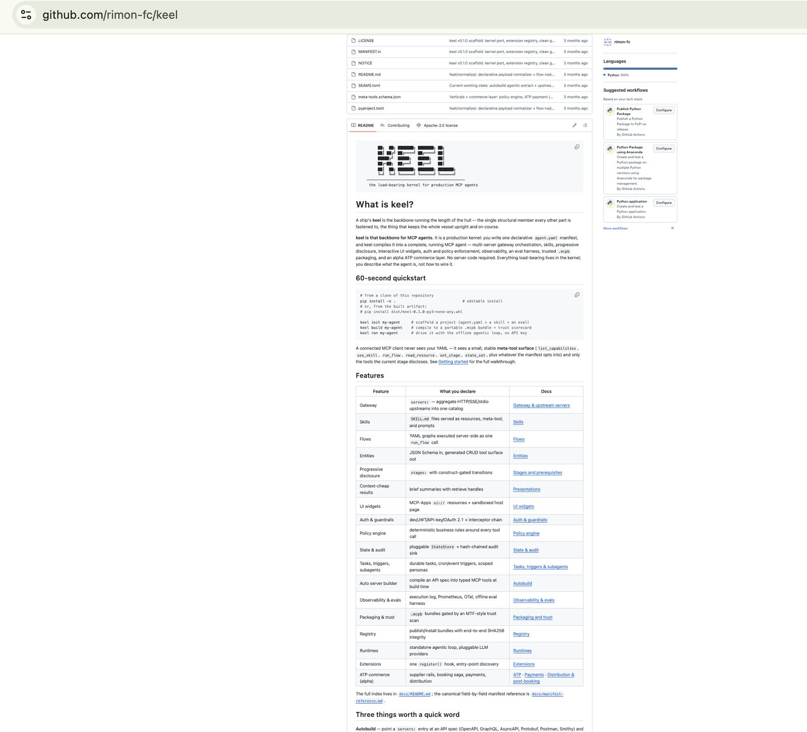
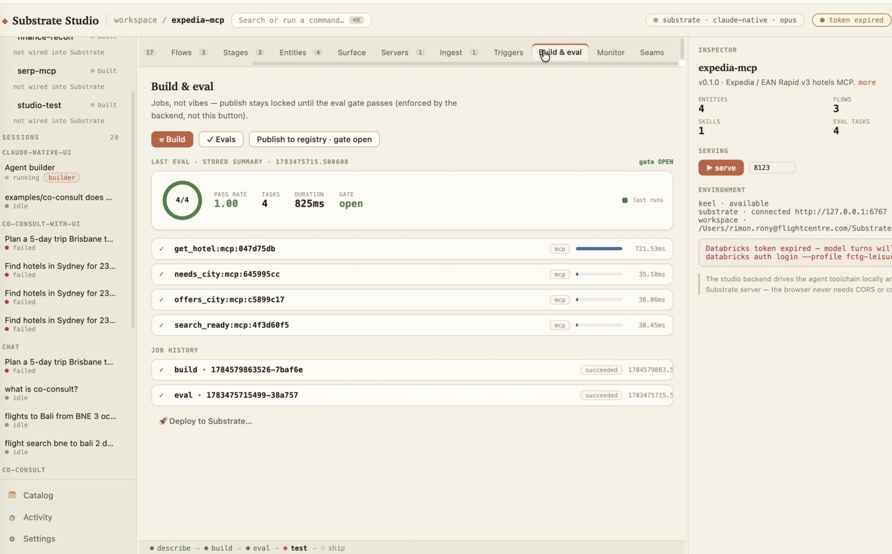
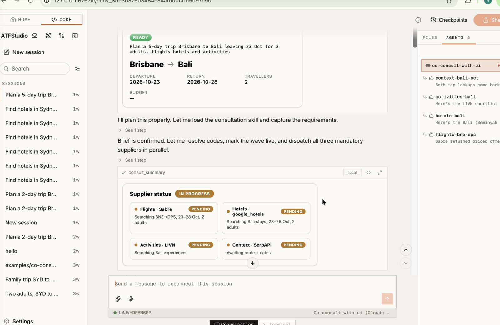
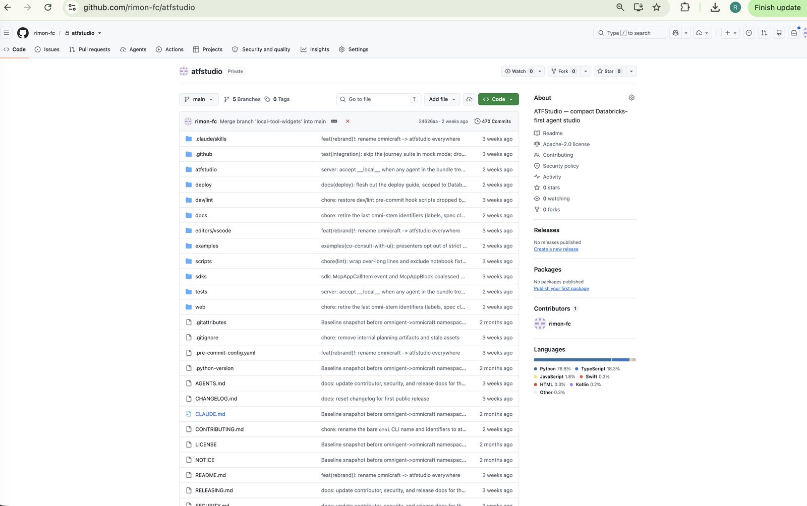
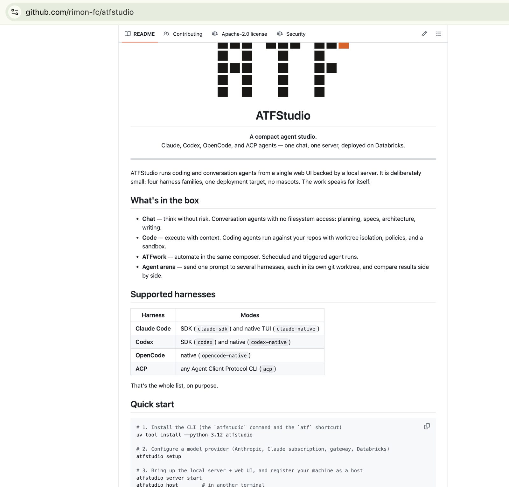
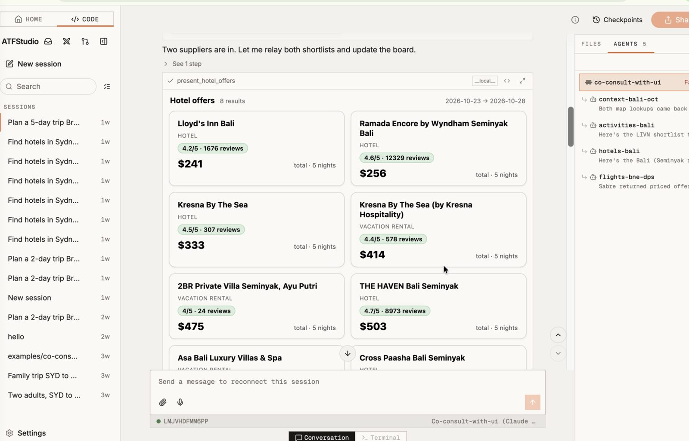
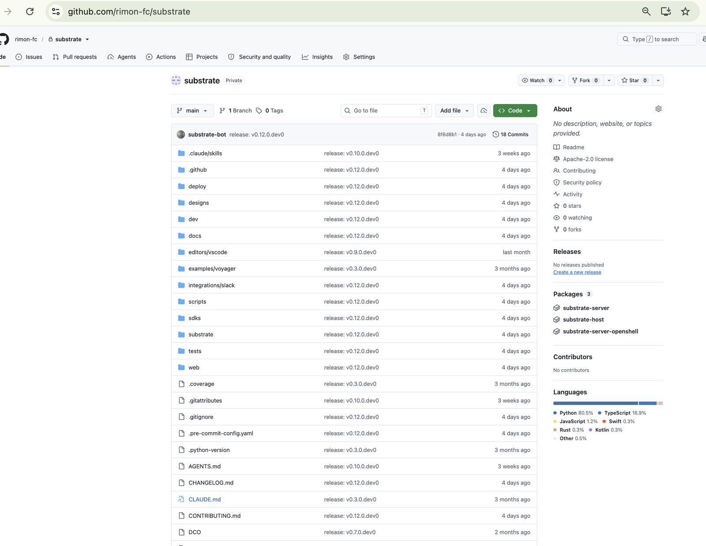

A Governed Agent Production Stack
keel, a production kernel that compiles declarative manifests into complete MCP agents; ATFStudio, a compact studio where business users compose those agents into working systems.
Rimon Rony
Global Leisure AI-LAB
Correspondence regarding keel, ATFStudio, ATP and Co-Consult
Enterprises can prototype AI agents in an afternoon and then spend a year failing to ship them. The deficit is not model capability; it is the absence of a production substrate: schema-enforced tool contracts, deterministic policy, tamper-evident audit, evaluation gates and trusted distribution. This document describes a two-layer answer, as implemented in two working systems. keel is a production kernel: one declarative agent.yaml manifest is compiled into a complete Model Context Protocol (MCP) agent, comprising multi-server gateway orchestration, skills, flows, entities, staged disclosure, interactive UI, authentication, an interceptor chain, a deterministic policy engine, hash-chained audit, an offline evaluation harness and trust-scanned packaging, with no server code. ATFStudio is the studio above it, where business users compose those agents into working systems in natural language: harnesses, guardrails, scheduled automation and side-by-side agent comparison, deployed cloud-agnostically (Databricks, AWS, GCP). The stack is schema-native by construction, aligning with the JSON Schema tool interface that frontier models are post-trained against; it is governed below the manifest line; and it is honest by design through the SEAM capability register. The flagship proof is Co-Consult, an AI travel consultation system, and the Agentic Travel Protocol (ATP, alpha) extends the kernel into governed agentic commerce. Both systems exist and run today; every capability described is traced to its repository. The analysis closes with an appropriability and standards-economics assessment and a roadmap covering Agent2Agent (A2A) interoperability, the conversation extension and conformance.
Keywords: MCP agents · declarative compilation · progressive disclosure · policy engines · hash-chained audit · evaluation harnesses · SEAM honesty · ATP · ACP · A2A · appropriability · standards economics
Video demonstrations play in-page; both files ship alongside this page.
Provenance. Three private repositories stand behind this page: keel (the kernel), ATFStudio (the studio and its control plane) and the Substrate workspace. They are extensively documented in the ordinary engineering sense, twenty-three reference documents under keel/docs, per-example READMEs across sixteen runnable example agents, the ATFStudio agent-image specification and its control-plane API reference, plus design notes and a generated seam register. Because the repositories are private, none of that material is externally visible; this document is the single public surfacing of the stack, assembled directly from the repositories, their documentation and their example manifests, with the internals formalised rather than quoted.
Honesty statement. This is documentation of two real, working systems, not a proposal: every capability claim traces to the keel or ATFStudio repositories. ATP is alpha (draft v0.3). The hosted registry and the conformance suite are separate in-progress tracks. Databricks is the reference deployment; AWS and GCP are supported targets by design. This document reports capability states truthfully throughout.
The industry has converged on one interface for agent capability: JSON Schema tool contracts, standardised by the Model Context Protocol. Frontier models are post-trained against this interface [4,5]. Yet most agent stacks still hand-wire servers, scatter policy across prompts, and ship without evaluation or audit. Capability is commoditising; governed composition is not.
Act 1 - keel builds the agents. One agent.yaml in, a governed agent out. The kernel owns everything load-bearing: gateway orchestration, skills, declarative flows, entity CRUD generation, progressive disclosure, authentication and an interceptor chain, a deterministic policy engine, hash-chained audit, an offline evaluation harness and trust-scanned .mcpb packaging. A connected client never sees the YAML; it sees a small, stable meta-tool surface and only the tools the current stage discloses.
Act 2 - ATFStudio runs the business on them. Once agents exist, ATFStudio is where they become systems. Four surfaces (Chat, Code, ATFwork, Agent arena), four harness families (Claude Code, Codex, OpenCode, ACP), OS-level sandboxing, per-session cost and evaluation tracking, and cloud-agnostic deployment across Databricks, AWS and GCP, each target treated seriously rather than as an afterthought.
Three properties differentiate the stack. Schema-native alignment: the platform is JSON Schema all the way down, sitting at the exact output distribution frontier models are trained to produce, which converts directly into reliability (Section 2). Governance below the manifest line: policy is deterministic middleware, not prompt text; the model can ignore context, it cannot bypass the interceptor chain (Sections 3, 5). Honesty as a feature: every capability boundary is a SEAM in exactly one of three states, real, guarded or absent, reported by the kernel itself (Section 3.19).
Everything in this document reduces to four claims, in this order. Kernel. keel is the load-bearing runtime for MCP agents: gateway, skills, flows, entities, progressive disclosure, durable tasks and delegation are one coherent surface, not a bag of parts (Section 3). Compiler. The whole surface is declarative infrastructure: a schema-typed manifest compiles to a running, governed agent, \(k:\mathcal{Y}\rightarrow\mathcal{B}\), and the compile refuses when validation, evaluations or the trust scan refuse (3.13, 3.19). Governance. Authentication, interceptors, the deterministic policy engine, the hash-chained audit spine, the eval harness and the trust scorecard sit below the manifest line, where no model output can reach them (Sections 3.8 to 3.11, 3.15, 3.16, 5). Protocol. ATP turns the governed kernel into a transaction layer for travel: consent-gated, compensable, auditable bookings with payments and margin enforcement built in (Section 4). Everything else here, sixteen runnable examples, the studio, the registry, the extension surface, is proof of execution for those four claims.
The stack is built inside Flight Centre Travel Group (FCTG) Global Leisure, and that is not incidental. FCTG Global Leisure supplies what a transaction protocol needs most and can least buy: a captive global distribution footprint and a live supplier network to bootstrap ATP against, real fares, real holds, real settlement, real consultants. Travel is the wedge, not the boundary: keel is domain-agnostic by construction (nothing in Sections 3 or 5 knows what a fare is), ATP is the travel binding of a repeatable pattern, and the same kernel-plus-protocol move lands in any vertical with suppliers, transactions and compliance exposure. Land in travel first, expand anywhere after; each published bundle, passing evaluation and audited transaction compounds the position rather than merely maintaining it.
The Model Context Protocol standardises how a model reaches capability: tools, resources and prompts are declared as JSON Schema contracts over a client-server protocol [2]. An MCP agent is a system that plans, calls schema-typed tools, observes results and iterates; the most effective production agents are exactly this simple loop rather than bespoke orchestration scaffolding [1]. The loop is naturally formalised as a partially observable Markov decision process:
where the action set \(A\) is the union of language actions and tool invocations, and each tool is a typed function \( t_j : \mathcal{X}_{\sigma_j} \rightarrow \mathcal{Y}_j \) whose admissible inputs are exactly the instances valid under its JSON Schema \( \sigma_j \). The environment is only partially observable: the agent sees tool results, never the world state, which is why audit and evaluation (Section 5) matter as much as capability.
Production practice moved from prompt-instructed JSON to structured outputs enforced at the API, so the model cannot emit a malformed call [3]. Two results are consistent with the claim. First, generating outputs that conform to a JSON Schema is not format mimicry; it requires comprehension of the schema, and schema-adhering data is essential in fine-tuning [4]. Second, reinforcement-learning strategies have been developed specifically for strict schema adherence, with supervised fine-tuning anchoring the final policy to schema-specific examples [5]. Constrained decoding restricts the sampling distribution to the schema language:
so a schema-constrained toolchain achieves \( P(\text{valid tool call}) \rightarrow 1 \) by construction rather than by hope.
Frontier models are post-trained, through SFT and RL, against the JSON Schema tool interface. A precision note is owed here: RLHF and RLVR are not themselves JSON-defined protocols; the claim is that the tool interface models are trained against is JSON Schema. It follows that a platform which is JSON Schema all the way down operates at the model's point of maximum reliability. keel and ATFStudio are instances of this principle: manifests validated against agent.schema.json, entities generated from JSON Schema, flows routed by JSON-Logic, APIs autobuilt into typed tools, and studio agents, tools and policies declared as schema-typed YAML.
A ship's keel is the load-bearing backbone, the single structural member every other part is fastened to. keel is that backbone for MCP agents: a production kernel that compiles one declarative agent.yaml into a complete running agent. No server code is written; the manifest describes what the agent is, not how to wire it. Formally, the kernel is a compilation function
from manifest space to bundle space, total only when schema validation, the evaluation harness and the trust scan all pass. The build is therefore a governed pipeline, not a packaging step.
In order to use keel: the keel-builder skill takes a plain-language prompt and builds the agent end to end; no YAML and no configuration file is hand-crafted. The manifest, entities, skills, flows, stages, evaluations and the trust-scanned bundle are all generated automatically (3.18).

This section is deliberately exhaustive; Table 1 is the ledger it substantiates, capability by capability. The frame for reading it is the four-beat order of Section 1.1: the kernel is 3.1 to 3.12, the compiler is 3.13 with the compile function above, governance is 3.8 to 3.11 with 3.15 and 3.16, and the protocol is Section 4; the remainder is proof of execution. Everything in the ledger is declarative infrastructure: declared in a manifest, compiled and enforced by the kernel, never wired by hand.
| Capability | The engineering claim | The value proposition |
|---|---|---|
| Gateway | Aggregate HTTP, SSE and stdio upstreams into one catalog | A single control plane for every tool an agent touches. Consolidation: one integration point instead of N, one place to enforce policy. |
| Skills | SKILL.md served as resources, tools and prompts | Institutional knowledge as a deployable asset. Expertise stops living in the heads of staff and becomes versioned, shippable intellectual property. |
| Flows | YAML graphs executed server-side in one call | Deterministic business processes. Replaces brittle multi-step prompting with guaranteed execution paths: reliability you can put a service commitment on. |
| Entities | JSON Schema in, CRUD tools out | Zero-code product surface. Days of integration work collapse to a schema file: speed to market as a feature. |
| Progressive disclosure | Stages with construct-gated transitions | Guided journeys with a shrunken error surface. The agent can only do the right thing at the right time: fewer failure modes, lower token spend. |
| Presentations | Brief summaries with retrieve handles | Context economics. Structurally lower inference cost per interaction, which compounds at scale into gross margin. |
| UI widgets | MCP Apps ui:// resources in a sandboxed host | Native distribution inside the AI client. The product renders where users already are, no app to install: a new channel, not just a feature. |
| Auth and guardrails | JWT, API key and OAuth 2.1, plus the interceptor chain | Enterprise-ready on day one. This is the procurement unlock: the security review passes instead of stalling the engagement for two quarters. |
| Policy engine | Deterministic rules around every tool call | Compliance outside the model. Business rules the model cannot talk its way around: the difference between a demo and a regulated deployment. |
| State and audit | Pluggable StateStore, hash-chained audit sink | Audit-grade provenance. A tamper-evident record of every action: regulator-ready, dispute-ready, insurance-ready. |
| Tasks, triggers, subagents | Durable tasks, cron and event triggers, scoped personas | Autonomous operations. Work continues under the same guardrails with nobody at a keyboard. |
| Autobuild | Compile an API specification into typed tools at build time | Any existing API becomes agent-ready at the cost of pointing at its specification, behind one governed catalog. |
| Observability and evals | Execution log, Prometheus, OpenTelemetry, eval harness | Measurable quality. Agents you can put a number on: de-risks deployment and turns trust-me into a dashboard. |
| Packaging and trust | .mcpb bundles gated by a trust scan | Supply-chain security for agents. Signed, portable, scanned artefacts: the precondition for an app-store economy. |
| Registry | Publish and install with SHA256 integrity | Distribution integrity. Verification at publish and install is what lets strangers consume each other's bundles. |
| Runtimes | Standalone loop, pluggable model providers | No vendor lock-in. Model-agnostic by design: margin is never hostage to one provider pricing decision. |
| Extensions | One register() hook, entry-point discovery | Platform, not product. Third parties build on the kernel: ecosystem gravity that compounds. |
| ATP commerce | Supplier rails, the hold-commit saga, payments | The transaction layer. Where agents stop advising and start booking: take-rate economics on every transaction that flows through. |
Table 1. The capability ledger: engineering claim and value proposition per capability. Sections 3.1 to 3.18 substantiate each row; Section 4 carries the last.
Declared: a servers: block aggregating HTTP, SSE and stdio upstreams into one catalog, with collision policy, allowlists and ${ENV} expansion. Meaning: one agent fronts many servers behind a single governed surface, so integration count stops scaling headcount and every upstream inherits the enforcement layers below. The flagship co-consult manifest shows the range: a managed remote MCP bridged over stdio, five providers autobuilt from OpenAPI specifications with per-request signers, and a vector-search MCP aggregated directly.
declares an upstream set \(S=\{s_1,\dots,s_n\}\), each \(s_i=(\tau_i,\,\epsilon_i,\,a_i)\) with transport \(\tau_i\in\{\text{http},\text{sse},\text{stdio}\}\), or \(s_i=\mathrm{autobuild}(\mathrm{spec}_i)\) (Spec 9). Authentication \(a_i\) is a per-upstream declared signer (bearer, query key, per-request HMAC); secrets enter only by environment expansion \(\varepsilon:\ \${V}\mapsto\mathrm{env}(V)\), never as literals.
compiles one catalog \(C=\biguplus_i N(s_i)\) under a prefix collision policy, with the guarantee that every \(t\in C\) is reachable only through the enforcement chain (3.9, 3.10). Instance: co-consult declares \(|S|=7\); five autobuilt, two bridged remote MCPs.
The engineering underneath is deliberately operational. Connections open lazily, so builds and offline evaluations stay green with every upstream down; each routed call carries a per-call timeout with one automatic reconnect, so transient drops are invisible and a hung upstream surfaces as a named timeout rather than a stalled agent. Per-server allowlists trim what an upstream may expose before anything downstream ever sees it, three collision policies (prefix, first-wins, error) make name clashes impossible by construction, and upstream credentials resolve through declared signers or connector references with token caching, never through anything inferred.
Value. a single control plane for every tool an agent touches. This is the consolidation play: one integration point instead of N, one place to enforce policy, one catalog to audit. Every subsequent capability in this section inherits that chokepoint for free.
Declared: SKILL.md files, optionally autoloaded per stage. Meaning: procedural knowledge served as skill:// resources, invoked through the use_skill meta-tool and exposed as /skill prompts. Value: the skill orchestrator turns operating knowledge into a governed, versioned artefact rather than prompt text pasted into a context window; co-consult's entire consultation brain is one skill autoloaded on the requirements stage. Alignment: skills discovery and distribution through MCP primitives is the subject of the official ext-skills repository (the Skills over MCP working group), which keel's skill:// surface tracks [11].
declares a versioned knowledge set \(K\) and an autoload relation \(A\subseteq K\times S\) over stages. compiles each \(k\mapsto(\text{skill://}k,\ \mathrm{use\_skill}(k),\ \text{/skill prompt})\), so the knowledge surface at stage \(s\) is \(K_s=\{k:(k,s)\in A\}\), governed and diffable rather than pasted prompt text. Instance: co-consult's consultation brain is a single \(k\) autoloaded at the requirements stage.
Two properties make skills safe to treat as an asset class. First, executable frontmatter is quarantined: any field that would imply running code is stripped and recorded inert, because a skill served over MCP is untrusted text, never code. Second, provenance is structural: skills synced from a repository carry a provenance sidecar (source, owner, ref, fetch time, executed: false) attached to the served resource, owner allowlists reject unexpected sources before any fetch, and pinned refs are never silently re-pulled. Skills can also gate themselves on the tools they need, disappearing cleanly from agents that cannot satisfy them, and version-adaptive bodies serve the right procedure to the right client version.
Value. institutional knowledge becomes a deployable asset. The procedures that live in the heads of the best consultants become versioned, diffable, shippable intellectual property, loaded at exactly the workflow stage where they apply.
Declared: YAML graphs of entry, transform, switch, tool and exit nodes. Meaning: a flow is, in graph-theoretic terms, a directed graph
whose execution is a single walk from the entry node to an exit node. A transform node has out-degree one and rewrites data (JSONata shaping); a switch node has out-degree greater than one and selects exactly one outgoing edge by evaluating JSON-Logic predicates over upstream node outputs, with a declared default edge so the walk is total; a tool node calls an upstream capability through the full enforcement chain. Node outputs are addressed by path ($.classify.priority), so every edge carries typed data, and the whole graph is schema-validated at build time. Termination is guaranteed by construction: execution.limits.max_node_executions bounds the length of any walk, so even a graph with back-edges cannot run away. The entire graph executes server-side as one run_flow call, and expose: tool optionally registers a flow as a first-class MCP tool with its own input schema. Value: deterministic multi-step work without exposing intermediate nodes to the model: the model sees one tool, the business sees one auditable graph, and both the attack surface and the token bill shrink accordingly.
declares the labelled graph \(G=(V,E,\ell)\) of Section 3.3, with switch routing \(\delta_v\) selecting exactly one outgoing edge by JSON-Logic predicate, total via a default edge.
exec(f, x): w ← entry; ctx ← {entry: x}
while type(w) ≠ exit: ctx[w] ← eval(w, ctx); w ← δ_w(ctx)
return ctx[pred(w)] ▷ walk length bounded by the execution limit
Instance: the support-agent triage flow has \(|V|=7\), one switch, and folds three routes into one queue field.
run_flow call executes the whole graph server-side; the model never sees the intermediate nodes.Flows are also debuggable the way production infrastructure should be: an interactive controller exposes pause, single-step, breakpoints and time-travel inspection (the exact context an expression saw at any execution index) as meta-tools, so a mis-routed switch is diagnosed against real state rather than guessed at. A node may pause the whole flow until the caller supplies schema-validated input (the flow returns a structured input-required envelope, never an error), loops are first-class with per-node history accessors, and every run is bounded by manifest limits on node executions and wall-clock time.
Value. deterministic business processes. A flow replaces brittle multi-step prompting with a guaranteed execution path whose every node execution is recorded: reliability you can put a service commitment on, and debug when it is questioned.
Declared: JSON Schema per record type. Meaning: a generated, file-backed CRUD tool surface with relations, graph reads and seeding, plus a per-entity presentation.brief field list (3.6). Value: structured domain state without writing a persistence layer, and, in co-consult, provider neutrality: any supplier's flight-shop response is fanned into canonical fare_offer, flight_segment and fare_rule records by a declarative mapping, with the raw payload spilled losslessly behind a retrieve handle.
declares per record type a triple \((\sigma,\,O,\,\pi_b)\): a JSON Schema \(\sigma\), operations \(O\subseteq\{\text{create},\text{get},\text{update},\text{delete},\text{list},\text{search}\}\), and a brief projection \(\pi_b\). compiles the typed CRUD surface \(\{o_\sigma\}_{o\in O}\); reads return \(\pi_b(r)\) with a retrieve handle to the full \(r\) (3.6). Instance: co-consult normalises every supplier payload into nine canonical types, the raw shop spilled losslessly behind the handle.
The store is more than six verbs. Records carry typed relations with a write-time reverse index, composite reads load a record plus its neighbourhood to a chosen depth with cycles cut, an activities trail records audit events against any record, seeding is idempotent on id so repeated builds never duplicate data, and lifecycle hooks map entity events to flows (a created ticket can notify the on-call flow declaratively). Server-managed base fields are stripped from the input schemas, so the model is never asked to invent bookkeeping.
Value. a zero-code product surface. Days of integration work collapse to a schema file, and the result is not a toy: relations, graph reads, audit trails and event hooks arrive with it. Speed to market becomes a property of the kernel rather than a heroic effort.
Declared: stages: scoping tools, skills and widgets, transitions: between them, and constructs:, named, schema-validated session state that gates entry. Meaning: the cart-before-checkout gate: a session cannot enter a gated stage until the required construct validates; until then set_stage returns KEEL_PREREQUISITES_UNMET and list_capabilities shows the gate up-front. Disclosure forms a monotone lattice of capability sets \( T_{s} \subseteq T \) so a client can never reach a capability its stage has not earned. Value: workflow correctness enforced structurally, not requested politely.
declares stages with a transition relation \(\rightsquigarrow\) and constructs \(c\) with schemas \(\sigma_c\). Gate rule: a transition \(s\rightsquigarrow s'\) is admissible at session state \(m\) iff \(\forall c\in\mathrm{prereq}(s'):\ m\models\sigma_c\); otherwise the kernel refuses with KEEL_PREREQUISITES_UNMET and advertises the gate in list_capabilities. Capability disclosure stays monotone, \(T_s\subseteq T\). Instance: support-agent gates escalation on \(m\models\sigma_{\text{ticket\_context}}\) (Figure 5).
ticket_context construct validates. Structure, not persuasion.The refusal is the point. An inadmissible transition returns a structured payload naming exactly which constructs are missing, their schema summaries, and the state keys that satisfy them, never an exception; the agent reads the refusal, fills the named state, and retries. Stage state is isolated per session, every successful transition notifies the client to re-fetch its tool list, and a stage with no outgoing transitions automatically offers session termination.
Value. guided journeys with a shrunken error surface. The agent can only do the right thing at the right time, which is simultaneously a safety property (fewer failure modes) and a cost property (a smaller visible catalog per turn means lower token spend). This is progressive disclosure as enforced architecture, not as prompting advice.
Declared: presentation.brief per entity and per result. Meaning: context-cheap brief summaries carrying retrieve handles; nothing lost, only deferred. Context is a finite resource that agentic systems must engineer deliberately [6], and this feature makes that engineering declarative: co-consult's flight searches return a compact brief keyed by shop_id while the megabyte-scale raw payload waits behind the handle.
The numbers are deliberately small and pinned by tests: a brief record is the id plus three scalar fields (or the manifest-declared projection), a brief list is five reduced items plus a total, and a twenty-record list that would dump thousands of characters serialises to under eight hundred, with the full payload one verbatim retrieve call away. Diagnostics are never reduced, and write results are always complete.
Value. context economics as a structural property. Every read the model performs costs a fraction of the naive dump, and nothing is lost, only deferred; at fleet scale that difference in inference cost per interaction compounds directly into gross margin. This is context engineering enforced by the kernel rather than requested of the model.
Declared: MCP-Apps ui:// resources with a sandboxed host page and a dashboard widget-host emulator, for example support-agent's ui://ticket-card rendered inline with the tool result. Alignment: this implements the official MCP Apps extension, SEP-1865, maintained in the modelcontextprotocol/ext-apps repository [11], so keel widgets are standard, not proprietary surface.
declares \(w=(\text{uri}:\ \text{ui://}\dots,\ \text{mode},\ \text{entrypoint},\ \text{display})\), rendered only inside the sandboxed host page, optionally inlined with the tool result that produced it. The declaration conforms to the MCP Apps extension, SEP-1865 [11]; nothing about the widget is proprietary surface.
Widgets ship in both wire dialects at once, the standard MCP Apps form and the legacy form side by side, so the same declaration renders in compliant hosts today and older hosts through migration. The production host page runs a deny-by-default sandbox (no same-origin privileges), per-widget content-security domains are declared in the manifest, UI-only tools are callable from inside a widget but invisible to the model, and a built-in host emulator with a live in-process server makes widget development possible without any real host on the laptop.
Value. native distribution inside the AI client. The product renders where users already are, inside the assistant surface itself, with no app to install and no session to leave: a distribution channel, not a feature checkbox.
Declared: dev, JWT, API key or OAuth 2.1 caller auth (auth: { provider: dev } in the offline examples), TTL sessions, and upstream connectors with token exchange and per-request signers, Spec 1 records the three declared signer shapes, a bearer bridge, a query-key signer and a per-request HMAC signer. Alignment: the authorisation surface tracks the official ext-auth extension repository, OAuth client credentials and enterprise-managed authorisation [11].
The auth surface runs both directions and is standards-literal. Inbound, the agent is an OAuth 2.1 resource server with published protected-resource metadata and a built-in token endpoint (client-credentials, three client authentication methods, resource indicators, scope enforcement); dev, JWT and API-key postures cover every deployment stage below that. Outbound, connectors obtain upstream bearers through pre-issued tokens or live client-credentials flows with expiry-aware caching, and an enterprise block enables the RFC 8693 token-exchange chain, corporate identity in, audience-scoped access out, for enterprise-managed authorisation. Secrets never appear in a manifest; every credential arrives from the environment at runtime.
Value. enterprise-ready on day one, in both directions. This is the procurement unlock: the security review reads a standards-conformant auth architecture and passes, instead of stalling the engagement for two quarters while one is retrofitted.
Declared: a guardrails.interceptors chain of validators and mutators bound to event patterns and phases. Meaning: enforcement wraps every call, which matches the emerging design consensus that injection defence must constrain what tool calls can do rather than what the model is asked to do [7]: adversarial context reaches the model; it must not be able to reach the tools. Alignment: interceptor semantics are under standardisation in the org's experimental-ext-interceptors repository [11].
The mechanics matter as much as the placement. Each interceptor is named, has a kind (a validator, which can reject an event, or a mutator, which rewrites it), binds to event patterns (tools/*, resources/*) and to a phase (request or response), and the chain composes in declaration order around every call, including calls to autobuilt tools and aggregated upstream servers, so complete mediation holds: there is no path to a capability that bypasses the chain. The two shipped patterns in Spec 7 show the division of labour: a request-phase validator blocks injection before a tool ever runs, and a response-phase mutator redacts PII before a result ever reaches the model's context. Because interceptors are declared in the manifest, a change to the security posture is a reviewable diff and a rebuild, never a prompt edit.
declares an ordered chain \(I=\langle i_1,\dots,i_n\rangle\), \(i=(\text{kind}\in\{\text{validator},\text{mutator}\},\ \text{events},\ \text{phase})\). Request semantics: \(r' = (i_n\circ\dots\circ i_1)(r)\), where any validator may map to \(\bot\) (reject); response semantics are dual. Complete mediation: the domain is every tools/* and resources/* event, autobuilt upstreams included. Instance: co-consult runs an injection validator on request and a PII mutator on response.
Deployment of a new guardrail is itself governed: audit mode shadows the entire chain against production traffic, logging violations and computing mutations without applying or blocking anything, so a new interceptor is trialled on real load before it is allowed to say no. Per-interceptor fail-open and chain-wide defaults make the crash semantics explicit, and a blocked call surfaces as a structured verdict naming the guardrail, never as a mystery failure.
Value. the safety layer that wraps everything else, including every autobuilt tool, with complete mediation. Combined with 3.10 it is why the stack is governance-native rather than governance-adjacent: the controls are in the request path, not in the prompt.
Meaning: deterministic business rules evaluated around every tool call. Where interceptors (3.9) protect the system, the policy engine encodes the commercials: this is where a travel business writes down, as code rather than prompt text, the rules it already runs on. Concretely: fare-tier rules (a consumer-tier trip cannot commit a business-class fare; a corporate profile books refundable fares only); margin rules (a proposal whose blended margin falls below the floor is blocked or escalated for approval rather than sent); supplier-hierarchy rules (mandatory primaries are searched before advisory context sources ever influence a recommendation); spend ceilings per booking and per customer; and consent rules (no ATP commit path exists without the Section 4.1 consent event). Because the rules are deterministic middleware, they hold identically for every model, every prompt and every session; a pricing rule changed in the manifest changes everywhere at the next build, with the old and new behaviour separated by one reviewable diff. Value: the governance claim of the stack in one sentence:
The failure semantics are the contract. A deny rule whose precondition cannot be evaluated fails closed, because an unverifiable precondition must not permit a commercially binding action; a broken transform fails open with an audited error, because an enrichment must not take the surface down; a missing or broken engine backend fails closed on every applicable call with a structured envelope, never a silent permit. Expressions are evaluated by a safe AST walker, there is no eval anywhere, and payment-mandate claims carried in a traveller token are enforced as implicit deny rules (amount caps, scope checks) ahead of every configured rule.
Value. compliance outside the model. A margin floor, a supplier preference, an escalation threshold: these are business rules the model cannot talk its way around, evaluated deterministically on every call. It is the difference between a demo and a regulated deployment.
Declared: a pluggable StateStore (memory, sqlite, Postgres, Redis) and an append-only audit sink. Records are hash-chained,
so tampering with any record \( r_j \) invalidates every subsequent link, by collision resistance of \(H\). This is the property an auditor actually wants: not a log, a tamper-evident chain.
The chain mechanics are simple enough to audit by eye: each record hashes its predecessor from a fixed genesis, the canonical serialisation is byte-stable across processes, the module issues only create, insert and select statements (append-only by construction, asserted by tests against the source), and a single verify call re-walks the whole chain and names the first broken row. One pluggable key-value spine carries every kind of durable state, sessions, stage state, task records, so moving from in-memory to SQLite, Postgres or Redis is one manifest line, not a rewrite.
Value. audit-grade provenance. A tamper-evident record of every tool call, policy verdict, payment transition and booking state change: regulator-ready, dispute-ready, insurance-ready. When a booking is challenged, the answer is a chain verification, not an archaeology project.
Declared: durable pollable tasks that outlive a conversation turn; event and cron triggers that run flows with no human in the loop; and named subagent personas with narrowed capability surfaces, the orchestrator-plus-specialists pattern that multi-agent systems research has converged on. Alignment: long-running task semantics track the official ext-tasks extension, and trigger and event semantics the org's experimental-ext-triggers-events repository [11]. flight-deal-watcher is the working example: an entity.changed trigger and a cron poll both drive the same flow and post hits to a webhook.
declares \(T=\{(e,\ \varphi,\ f,\ \kappa)\}\): event source \(e\in\{\text{entity.changed},\ \text{cron}(\text{expr})\}\), guard \(\varphi\) in JSON-Logic, flow \(f\), sink \(\kappa\). Semantics: on \(e\) with \(\varphi(e)\), execute \(f\) on the event payload and append to the audit chain \(h_i\); durable tasks are pollable state machines outliving a turn [11]. Instance: the deal watcher declares two sources, one flow, one webhook sink.
Three details carry the weight. Durable tasks have a real lifecycle (working, input-required, terminal states) with cooperative cancellation and capability negotiation, a task handle is never given to a client that cannot poll it. Delegation serves a subagent from a projected surface where out-of-scope tools are absent, not refused: even a prompt-injected call to a forbidden tool fails because the tool does not exist there, and the delegated prompt is wrapped as data beneath the persona instructions, so a task that tries to redefine the persona lands inside the data block. Cron uses a real five-field parser with macros, triggers guard on typed events with predicate conditions, and webhook sinks report outcomes without ever being able to crash the server.
Value. autonomous operations. Deals are watched, disruptions are handled and reports are produced while nobody is at a keyboard, and the work continues under the same guardrails as interactive traffic.
Declared: a servers: entry pointing at an API specification, OpenAPI, GraphQL, AsyncAPI, Protobuf, Postman or Smithy, or at unstructured documentation, with build knobs under auto_build:. Meaning: keel compiles the specification into typed MCP tools at build time; nobody hand-writes an integration server. Every specification is vetted through the guardrail chain on each load, authentication is never guessed, and unstructured sources require review before caching. Value: the marginal cost of a new integration approaches the cost of pointing at its spec; five of co-consult's seven upstreams are autobuilt.
declares a source specification and compiles the mapping \(\mathcal{A}:\ \mathrm{Spec}_{\mathrm{fmt}}\rightarrow \mathrm{Tools}\), \(\mathrm{fmt}\in\{\text{OpenAPI},\text{GraphQL},\text{AsyncAPI},\text{Protobuf},\text{Postman},\text{Smithy},\text{docs}\}\), with two invariants: \(\mathrm{vet}\circ\mathcal{A}\) runs on every load, and authentication is a declared signer, never inferred; unstructured sources additionally require human review before caching. Consequence: the marginal cost of an integration approaches the cost of pointing at its specification.
The pipeline is disciplined about trust. The registry is consulted before any compile, so a known-good contract is never re-derived; every built tool is routed through the interceptor chain on every load, so a specification poisoned after first vetting is still caught on reload; authentication is never guessed, an unstructured source with no valid declared auth scheme refuses to build at all, with a structured envelope naming the gate, before any extraction model is even consulted. Extracted specifications are pinned for one-time human review with a recorded digest, and a scheduled drift checker re-derives each source against its pin under a per-day budget, publishing honest events for both detected drift and budget-exhausted skips.
Value. The marginal cost of an integration approaches the cost of pointing at its specification, so every OpenAPI file and every partner portal becomes addressable. Consolidation of that surface behind one governed catalog is the compounding part.
Meaning: keel-runtime is the standalone agentic loop that actually drives the agent: it plans, calls tools and observes results in a turn loop [1], with pluggable LLM providers (an offline mock by default, requiring no API key) and optional external executors. This is what makes keel run work without wiring an LLM by hand.
Input: goal g, manifest-compiled agent A, provider P, budget B 1: ctx ← initialise(g, A.meta_tool_surface) 2: while not done(ctx) and cost(ctx) < B do 3: plan ← P.next(ctx) # language or tool action 4: if plan is tool_call(t, x) then 5: assert x in X_sigma(t) # schema-valid by construction 6: v ← enforce(auth, guards, policy, t, x) # Section 5 7: if v = ALLOW then r ← t(x); audit(h, r) 8: elif v = ASK then r ← await_human(); audit(h, r) 9: else r ← denial(v.reason); audit(h, r) 10: ctx ← observe(ctx, present(r)) # brief + retrieve handle 11: else ctx ← observe(ctx, plan) 12: return transcript(ctx), audit_chain(h)
Honesty about coverage is built into the runtime tier itself. The in-process paths wrap every tool call in the guardrail chain; the external harness paths wrap only the agent's MCP surface, and the agent reports which posture it is running under rather than letting anyone assume. A mock brain is always an explicit choice, never a silent fallback; live harness paths are gated behind an explicit environment opt-in so CI can never accidentally spawn one; and elevated permissions require an explicit sandbox decision in the manifest, enforced again at run time, before any child process is spawned.
Value. no vendor lock-in, stated as architecture rather than aspiration. Providers and harnesses are pluggable behind one seam, a keyless subscription lane exists beside the API-key lanes, and margin is never hostage to one provider pricing decision.
Declared: observability: (Prometheus at /metrics, OpenTelemetry tracing, PII-sanitised signals, an execution log with retention, a live dashboard) and evals: (a directory of offline evaluation cases with assert markers). All seven shipped examples are built and evaluated in continuous integration; benchmark practice for tool-agent evaluation in commerce-like domains follows the tool-agent-user setting, whose airline domain is directly adjacent to ATP [9].

The eval harness is deliberately deterministic: tasks name the exact tool, resource or flow to exercise, so they run with no external model, fully offline, identical in CI and on a laptop, over the real MCP protocol via an in-process client, and the command exits non-zero on any failure, which is the entire CI story. Telemetry redacts secrets and personal data before anything is persisted, by default; Prometheus counters and optional OpenTelemetry spans come from the same records that feed the operator dashboard and, opt-in, the audit chain.
Value. measurable quality. Agents you can put a number on, with the number produced by a gate rather than a demo: it de-risks deployment and turns trust-me into a dashboard. The eval harness is also the compiler's refusal criterion, quality is enforced at build, not requested at runtime.
Declared: package: { format: mcpb, min_trust: L2 }. Meaning: compilation to a portable .mcpb bundle is gated by an MTF-style trust scan at publish and re-run at install, with a declared minimum trust level; the bundle format itself is the org's official mcpb specification, not a private container [11]. Shipping is a permission the build earns.
The trust scorecard is honest about its own reach: eight real controls across the five framework domains are evaluated (secrets, dangerous patterns, dependency pinning, bundle completeness, declarations, provenance), the computed level is capped at the standard tier no matter how clean the bundle, and the scorecard records that the level is based on a control subset. A manifest demanding a floor the scanner cannot attest fails loudly at build, not quietly at publish. The same scan runs again at load and install time, so a dependency bundle that has rotted or been tampered with is refused with an actionable error naming the failing controls.
Value. supply-chain security for agents. Signed, portable, scanned artefacts with an enforced trust floor at both ends of the pipeline: the precondition for an app-store economy, and the reason a third-party bundle can be adopted without a bespoke security review per vendor.
Meaning: publish and install bundles with end-to-end SHA256 integrity; a local FileRegistry is the self-contained default today, and the integration target is the official MCP Registry, the org's hosted discovery service with namespace-authenticated publishing [12].
Integrity is verified at every touch, not just at upload: the artefact digest is recorded when published, re-checked on every read, and re-checked twice on install (the stored copy and the installed copy), with a failed copy deleted rather than left behind; index writes are atomic, so a crashed upload can never leave a half-written registry. The default backend is a plain directory with no server and no credentials beyond filesystem permissions, and a remote registry swaps in behind the identical publish flow with an OIDC token exchange.
Value. distribution network effects. Every published bundle makes the platform more valuable to the next builder, and the integrity discipline is what lets strangers consume each other's bundles.
Extensions: one register(mcp, manifest, ctx) hook with entry-point discovery is how verticals plug in; ATP (Section 4) is itself an extension, and the proposed conversation extension (Section 9.1) follows the same pattern. keel-builder: the natural-language doorway. A skill-capable assistant pointed at skills/keel-builder/ takes a plain-language brief, routes it, scaffolds the project, composes entities, skills, flows, stages, UI and auth, autobuilds servers from APIs or documents, packages and trust-scans the bundle and verifies it with the evaluation harness, returning a runnable agent folder. The brief is the interface; the manifest is the artefact.
The discipline is what makes third-party capability safe: registration is unconditional but activation is manifest-driven (an extension whose block is absent must do nothing), a failing import or a raising hook can never crash server startup, the manifest forbids unknown top-level keys so a typo fails loudly and an extension cannot invent configuration, and the kernel's own engines load through the same mechanism in a fixed order, guardrails first so they wrap everything, UI last so it can see everything.
Value. platform, not product. One hook, one discovery convention and one no-op rule are the whole third-party contract: low enough friction that verticals accrete onto the kernel, disciplined enough that none of them can degrade it. Ecosystem gravity compounds; a product roadmap does not.
Every capability boundary in a keel build is a seam in exactly one of three states: real (implemented and on by default), guarded (dormant until an extra dependency, environment variable, flag or configuration key is satisfied) or absent (declared in contracts but not implemented, surfaced through validation errors and stubs, never faked). keel seams prints the honesty table for the build, sourced from SEAMS.toml; keel status prints the wired state of the install.
Input: agent.yaml y 1: assert validate(y, agent.schema.json) # fail closed 2: for s in y.servers where s.spec exists do 3: tools ← autobuild(s.spec) # typed tools from spec 4: assert guardrail_vet(tools) # on every load 5: E ← run_eval_harness(y) # offline, CI-grade 6: assert pass_rate(E) >= threshold # evaluation gate 7: b ← package(y) # .mcpb bundle 8: assert trust_scan(b) # MTF-style gate 9: publish(b, registry, sha256(b)) # integrity end to end 10: emit seams_table(b) # honesty, machine-readable
Everything in this section reduces to one pattern: keel rides the JSON Schema interface that frontier models are post-trained against [4,5], and that API providers now enforce as structured outputs [3]. The manifest is validated against agent.schema.json; entities are JSON Schema in, CRUD tools out (3.4); flows are shaped by JSONata and routed by JSON-Logic (3.3); autobuilt servers are typed tools compiled from schemas (3.13); and every MCP tool contract the client sees is JSON Schema by specification [2]. The platform therefore operates inside the exact output distribution the models were trained to produce (Section 2.3), which converts directly into call reliability. This is the stack's primary differentiator; its economic weight is analysed in Section 8.
keel[atp] and atp.enabled. Every ATP capability declares its seam state, so a partner reading the seams table knows exactly what is live, what is guarded and what is declared but absent.ATP is the commerce layer that turns a keel agent into one that can search, hold and book across real suppliers. It comprises four elements. Supplier rails: how suppliers bind into the protocol, demonstrated by the travel-commerce example's supplier hierarchy. The booking saga: a hold-to-commit state machine with consent-gated commits. Payments: consumer capture, single-use virtual cards, margin handling and reconciliation. Distribution: UCP product discovery, directory listing under the Agentic Commerce Protocol [15], and order servicing after the booking call.
A booking spans systems that cannot share one ACID transaction, so it is executed as a saga: a long-lived transaction decomposed into steps, each with a compensating action, rather than one ACID commit. ATP's saga adds one non-negotiable safety property. Let \(E\) be the event sequence of a booking and \(c\) the explicit consumer consent event; then
no execution path reaches a commit without consent. An agent can therefore never spend money without an explicit, auditable human decision, and the consent event itself lands in the hash chain of Section 3.11.
1: q ← search(criteria); offer ← quote(q)
2: h ← hold(offer) # time-boxed, reversible
3: c ← request_consent(offer, h) # human, auditable
4: if not c.granted then release(h); return declined
5: p ← payment_instruction(offer) # single-use virtual card
6: try: b ← commit(h, p, c) # consent bound to commit
7: except: void(p); release(h); return compensated
8: audit(h_chain, {q, h, c, p, b}); return booked(b) -> servicing
Consent is engineered, not asserted. A TravellerToken is validated five ways in order: signature, issuer and audience against the configured key material; a lifetime ceiling clamped to twenty-four hours; op scope as a subset of the token's granted scopes; a commit total bounded by the token's maximum trip value; and single use for commit, a spent token is recorded durably and a replayed commit refuses. The saga itself is chaos-tested: a failure-injection harness exercises every leg-confirm position and every compensation position, including compensation-also-fails, and asserts the invariants that matter commercially: the transaction always lands terminal, no leg is left confirmed after a cancellation without an audit record explaining it, compensation runs strictly in reverse order, and the audit chain verifies after every run. Supplier capability is declared, never faked: an unmapped operation returns an honest not-supported envelope, and a below-tier supplier's booking-shaped ops are owned by the coordinator as internal records explicitly marked as such, the coordinator never pretends a supplier confirmed anything.
travel-commerce is the ATP reference implementation shipped today: supplier bindings, a consent-gated booking workflow and business policies, built and evaluated in continuous integration. co-consult is the flagship AI travel consultation agent, brief, supplier hierarchy, booking-ready itinerary; its adoption of ATP as a live reference is future work and does not exist yet, stated plainly in the seam discipline of this document (state: planned, Section 9). The posture is that of a standard in formation: a draft specification, one reference implementation, an evaluation-gated conformance path and seam-reported honesty, the shape of a protocol, not a feature (economic analysis in Section 8).
Once the saga confirms, someone has to pay twice: the traveller pays the agent (the consumer rail: an agentic-commerce checkout or an internal capture) and the agent pays the supplier (the supplier rail: a single-use virtual card, industry settlement, or a direct transfer, routed per leg by merchant-of-record rules). One payment instruction is built per reservation leg and walks an audited state machine from draft through issued, captured, settled and reconciled, with every transition appended to the hash chain. Three design facts carry the commercial weight. The margin is a policy fact. Gross minus cost is computed per instruction and published into the policy engine's fact space, where a margin-floor rule denies an unprofitable commit, and denies when the margin cannot be verified at all. The margin is never exposed to the supplier. A virtual card's ceiling is the supplier cost, never the gross. Captures are exactly-once. Capture runs once per commit, before the final confirm; a capture failure unwinds the confirmed legs through the standard compensation path, and retries replay the recorded capture rather than charging again. Reconciliation closes the loop by tying the booking reference, the record locator and the card reference into one verifiable chain record. Distribution is equally disciplined: capability declarations are derived from what the configuration actually supports, never asserted, and registration with any discovery endpoint or directory runs only under an explicit publish flag, an agent that cannot book advertises no booking capability, and no network call ever happens by default.
Value. this is the transaction layer, where agents stop advising and start booking, and where take-rate economics attach to every transaction that flows through. Agentic commerce needs exactly the properties built here: consent that cannot be replayed, compensation that cannot be skipped, margin that cannot be talked down, and an audit trail that cannot be edited.
Prompt-level guardrails ask the model to behave; keel's interceptor chain and policy engine make misbehaviour structurally impossible at the tool boundary, the correct placement for two reasons grounded in current research. Design-level injection defence must constrain what tool calls can do rather than what the model is asked to do [7]; and agentic-misalignment findings show that models themselves can take harmful actions under pressure, so enforcement cannot rest on model goodwill [8]. Enforcement order is fixed: authentication, guardrails, policy, audit, around every call, applying least privilege, fail-safe defaults and complete mediation to the agent setting.
ATFStudio's policy engine evaluates declared policies in order over verdicts \( \{ \mathrm{ALLOW}, \mathrm{DENY}, \mathrm{ASK} \} \), where DENY short-circuits and ASK pauses for human approval (approved becomes ALLOW, refused becomes DENY). Composition is an ordered short-circuit fold:
with \( \bot \) as abstention. Policies are set at three levels by three personas, and evaluation order is a trust statement: session policies (end user, first), then agent spec policies (developer), then server-wide policies (admin, last). A session can therefore always tighten, never loosen, what the organisation has set.
| Level | Persona | Declared in | Evaluated |
|---|---|---|---|
| Session | End user | Session settings, or by telling the agent (a built-in sys_add_policy tool) | First |
| Agent spec | Agent developer | policies: in the agent YAML | Middle |
| Server-wide | Administrator | Server configuration or REST API | Last |
Table 2. The three-level policy trust model. DENY from any level short-circuits the rest.
Two always-on guards are injected into every engine and cannot be disabled by any session, spec or admin: approval before an agent installs a policy (an agent able to install policies could install one that allows everything) and approval before every computer-use action (the tool drives the real screen, pointer and keyboard). Fail-safe defaults, made concrete.
Shipped policy families, read through a travel lens. Session and per-user daily cost budgets with soft ASK thresholds and an expensive-model downgrade gate: a consultation session drafts on a premium model until the soft threshold asks, and past the hard limit it continues only on a cheaper model, formally the constraint \( \sum_i \mathrm{cost}_i \le C_{\max} \) with checkpoints \( \theta_1 < \theta_2 < C_{\max} \). PII denial scans messages and prompts so a traveller's passport number, card details or contact data never enter an LLM request. Connector-scoping policies restrict which external systems an agent may read or write, read allowlists, explicit write targets, ASK on ambiguous commands: the shipped builtins scope development connectors, and the identical pattern scopes a booking engine, a fares cache or a supplier API. Working-directory locks parse chained and wrapped shell commands to stop trivial bypasses; tool-call rate limits cap runaway sessions; and an accruing per-session risk score
over tool calls and sensitive-data labels, so a session that has touched confidential fare or customer data escalates its guarded tools to ASK or DENY; and an LLM-routed policy denies trivial tasks to expensive models, so a simple date lookup never burns a frontier model. Every verdict, approval and state update lands in the audit spine.
The offline evaluation harness is a release gate, not an afterthought: examples ship only because they pass in continuous integration, and tool-agent evaluation practice follows the tool-agent-user benchmark setting, whose airline domain is directly adjacent to ATP [9]. The official MCP conformance suite, which exercises client and server implementations against the protocol specification, now exists in the protocol org [13]; wiring keel's generated servers through it is in progress on a separate track (Section 9), honestly marked.
Agent observability today has two layers: what the agent says (outputs, exposed chains of thought) and what it does (tool calls, file writes, the audit trail). keel and ATFStudio own the second layer with a tamper-evident spine and full cost, token and step accounting. Anthropic's 2026 global-workspace research, which identifies a readable set of internal representations, the J-space, through a Jacobian-lens readout, the J-lens [10,17], points to an emerging third layer: what an agent is thinking before it acts, where signals such as manipulation and injection can appear in the workspace without ever reaching the output [10]. The stack's position is strictly horizon: the audit architecture is ready to consume workspace-class observability when frontier laboratories expose it. This is an observability claim, not a JSON or protocol claim, and the two are never conflated.
After agents are built, ATFStudio is where business users compose them into working systems in natural language, custom harnesses, guardrails and automation from a plain-language brief, the same way Co-Consult was composed. The studio is deliberately compact: four surfaces, four harness families, cloud-agnostic deployment, no mascots.
In order to use ATFStudio: the user logs in and chats, exactly as with Claude or ChatGPT, and builds agents in conversation; no YAML and no configuration file is hand-crafted. The agent specification, tools, policies and sandbox settings are all generated automatically.


Chat: think without risk; conversation agents with no filesystem access, for planning, specifications, architecture and writing. Code: execute with context; coding agents against real repositories with git worktree isolation, policies and an OS-level sandbox. ATFwork: automate in the same composer; scheduled and triggered agent runs. Agent arena: send one prompt to several harnesses, each in its own worktree, and compare results side by side, a controlled experiment (one prompt, \(k\) harnesses, isolated environments) and a procurement-grade bake-off instrument.

Claude Code (SDK and native TUI), Codex (SDK and native), OpenCode (native), and ACP: any Agent Client Protocol command-line agent [16] (the client-to-agent protocol; distinct from the Agentic Commerce Protocol of Section 4). ACP is the meta-harness, the open door through which any conforming runtime plugs in without ATFStudio changes, and the natural landing point for A2A-era interoperability (Section 9). Sub-agents each choose their own harness and model, so an orchestrator mixes harnesses by role, the orchestrator-plus-specialists pattern, for example a Codex coder reviewed by a Claude reviewer.
A single YAML declares the agent, and it is the surface a natural-language brief compiles onto, the same declarative philosophy as keel one level up the stack. The anatomy: an executor choosing harness, model and auth profile; a prompt or an instructions file; tools of four kinds (MCP servers by command or URL, Python functions with JSON Schema parameters, sub-agents, and inherited tools); policies; os_env for sandboxed local access; named terminals; and typed user params. Servers shipping MCP Apps render their ui:// widgets automatically, no extra keys [11].
generated, never hand-written. An agent is the tuple \(a=(\mathrm{id},\ \pi,\ x,\ T,\ P,\ \Omega)\): prompt or instructions \(\pi\); executor \(x=(\text{harness},\ \text{model},\ \text{auth profile})\); tools \(T\) (Spec 11); policies \(P\) (Spec 12); environment \(\Omega\) (Spec 13). Usage is the compile \(b\mapsto a\) from a plain-language brief \(b\) typed in chat, validated against the agent schema; the specification is manifest-driven and machine-produced end to end.
declares \(T = T_{\mathrm{mcp}}\ \cup\ T_{\mathrm{fn}}\ \cup\ T_{\mathrm{agent}}\ \cup\ T_{\mathrm{inherit}}\): MCP servers by command or URL (keel .mcpb agents enter here), functions typed by JSON Schema parameters, and sub-agents, each element of \(T_{\mathrm{agent}}\) a full agent with its own executor \(x\), so an orchestrator mixes harnesses by role and the arena (6.1) measures the choice.
declares \(P=\langle p_1,\dots,p_n\rangle\), each \(p=(\text{handler},\ \theta)\) a deterministic function of the event, composed by the ordered short-circuit fold of Section 5.2 over \(\{\mathrm{ALLOW},\mathrm{DENY},\mathrm{ASK}\}\); and named terminals, interactive shells inheriting the environment \(\Omega\) so the same confinement governs tool calls and the human at the keyboard.
declares \(\Omega=(\beta,\ W,\ R,\ X)\): backend \(\beta\in\{\text{bwrap},\text{seatbelt}\}\), writable paths \(W\), egress rules \(R\), credential proxies \(X\). Invariant, held for the session lifetime: \(\forall\ \text{sandbox states }s:\ \text{live secret}\notin\mathrm{memory}(s)\); the layer-7 egress proxy attaches credentials on the way out, only to hosts in \(R\).
Two properties of this composition surface carry particular weight. First, sub-agents are full agents: each picks its own executor, so an orchestrator mixes harnesses by role and the arena (6.1) turns that choice into a measured comparison rather than a preference. Second, the manifest is the governance boundary: policies, sandbox, egress and credentials live in the same reviewable file as the prompt and tools, so a behaviour change and its guardrails ship in one diff.

Underneath the studio, an agent is an agent image: a portable directory artefact that fully describes it, a typed configuration, instructions, skills, packaged tools (local functions, declared MCP servers) and, recursively, sub-agent images. The composition rules are conservative on purpose: sub-agents are callable only when explicitly allowlisted by name, they are isolated by default (each sees only its own tools, no inheritance), and every sub-agent call produces its own trace span under the parent. The image is stored as a validated bundle; upload runs the same specification validator as the parser, so a malformed image is refused at the door, not discovered at the first turn.
declares a portable directory artefact \(g=(\mathrm{config},\ \pi,\ K,\ T_{\mathrm{local}}\cup T_{\mathrm{mcp}},\ G_{\mathrm{sub}})\): typed configuration (model, interaction contract, modalities), instructions \(\pi\), skills \(K\), packaged tools, and a recursive set of sub-images \(G_{\mathrm{sub}}\) with an explicit call allowlist \(A\subseteq\mathrm{names}(G_{\mathrm{sub}})\). Isolation invariant: a sub-image resolves skills and tools against its own directory only; \(a\notin A\Rightarrow\) the call is rejected. The image is self-contained and validated on upload against the specification.
Sandboxing is OS-level by platform default, bubblewrap on Linux and Seatbelt on macOS, with narrow write paths and explicit network egress rules; local Python tools can run container-isolated (Docker or Podman). The sandbox is a reference monitor: every access is mediated and defaults fail safe. The secretless credential proxy is the distinctive element: a mandatory layer-7 egress proxy attaches credentials on the way out, so the sandbox holds only placeholders and the invariant
holds for the life of the session, with OAuth tokens refreshed outside the boundary. Credential fields in the API are write-only: the server accepts them on create and update and never returns them, so no read path can leak a secret; the schema itself has no field to leak through.
One invariant deserves separate statement because it closes a whole exfiltration class: environment references inside an uploaded, tenant-scoped agent bundle are never expanded against the server's environment. Resolution happens at the author's own boundary, before upload; only operator-authored template agents expand server-side. A tenant therefore cannot obtain a server secret by referencing it in a header pointed at a listening endpoint, the request shape that would carry the secret is impossible to construct. Combined with the secretless sandbox proxy above, the posture is consistent end to end: secrets are attached at controlled egress points by infrastructure, and no tenant-supplied specification can name its way to one.
A browsable MCP connector catalog offers one-click install with an immediate connection test, because "it saved" and "it works" are different claims and only the second helps the person who clicked; secrets are referenced as ${VAR} so raw values stay out of bundles. This catalog is where keel-built .mcpb agents plug into the studio. Operationally the topology is one server, many hosts: the server owns sessions, policies and the web UI, and each registered machine runs agents locally, with per-session cost, token and step tracking and agent evaluations. Deployment is cloud-agnostic, Databricks, AWS or GCP, with Databricks as the reference deployment today (apps hosting, governed artifact store, model-serving backends, service-principal auth) and the other targets supported by design.
The studio's server exposes a compact control plane in four namespaces: agent management (upload, list, delete of validated agent images), conversations (retrieval of linear threads), sessions (the primary operational resource) and session-scoped file resources (uploads are immutable and owned by their session, invisible to every other). The session is where the operational semantics live. Each session is an explicit lifecycle automaton, \(\{\text{idle},\ \text{running},\ \text{waiting},\ \text{failed}\}\): idle accepts events, running streams a turn, waiting parks on an external signal (background tools, sub-agent completion, a client tool result) and resumes when it arrives. Events posted mid-turn queue behind the current one; an interrupt deliberately bypasses the queue and preempts everything in front of it, with both the response-level and the session-level cancellation events co-emitted so generic parsers and session-aware clients each close cleanly.
Three contracts make the surface production-shaped rather than demo-shaped. Reconnect. There is no replay machinery by design: a client reconnects by subscribing to the live stream first, fetching the snapshot second, and de-duplicating by stable item id, which bounds any race to one HTTP round trip. Fork. Threads are always linear; continuing from a non-latest response forks a new session with history copied to the fork point and the original untouched, and a fork clones the agent binding so the branch can be reconfigured independently. Approval. A human verdict on an elicitation is delivered to a dedicated, owner-gated URL rather than as an in-band session event, so the ASK verdicts the policy layer relies on can never be conflated with ordinary traffic, and anything other than an explicit accept denies.
Around those contracts sit the operational conveniences a business runs on: per-session model and reasoning-effort overrides and a per-session cost-control switch, persisted and shared by the web picker and the terminal alike; server-provisioned sandbox hosts, where the control plane creates the compute, binds the session and tears the sandbox down on delete; git-worktree sessions that put each engagement on its own branch with opt-in cleanup; live liveness signals that distinguish a sleeping runner on a healthy host from an unreachable one; and token-usage and cumulative-cost events on the stream, so spend is a first-class signal rather than a month-end surprise.
Value. the session is the unit of governance and of economics at once: one identifier ties the transcript, the approvals, the compute binding, the branch, the spend and the audit trail together. That is what an operations team needs to run agents as a workforce rather than as experiments.
Protocol layering follows one rule: a function lives at the layer that can implement it completely and correctly. Capability aggregation belongs in the kernel gateway; enforcement belongs where every call must pass; composition and human factors belong in the studio; integrity verification belongs end to end, from publish to install, as a SHA256 chain no intermediate layer can shortcut.
Value capture from a technological platform depends on the strength of protection around the innovation and on ownership of the complementary assets required to commercialise it. The stack's complementary assets are precisely the things a copier of code cannot copy: the governance plane and its enforcement history, the continuously evaluated example corpus, the hash-chained audit trails, the connector catalog and the travel-supplier relationships behind ATP. Each structural property of the platform, schema-native alignment, the compile-not-wire kernel, governance below the manifest line, the SEAM capability register, the secretless security architecture, harness-agnostic composition, cloud-agnostic deployment, and vertical depth with Co-Consult live, is a component of the regime, not a marketing bullet.
Technologies subject to increasing returns exhibit path dependence and lock-in to early leaders. With adoption utility
a small early lead compounds: each adopter raises the utility of the standard for the next. ATP's posture, a draft specification, a reference implementation, an evaluation-gated conformance path and supplier rails, is an attempt to be the standard-setter in governed agentic travel commerce before the category consolidates; the concurrent emergence of hyperscaler-backed commerce and interoperability protocols [14,15] confirms the layer is forming now. The empirical backdrop is firm: adoption and investment continue to compound, as the annual Stanford AI Index documents. Platform owners historically capture disproportionate value relative to complementors; the kernel-plus-studio structure places the stack on the owning side of that asymmetry.
| Asset class | Contents | Appropriability mechanism |
|---|---|---|
| Protocol assets | ATP draft specification v0.3, the travel-commerce reference implementation, conformance path (co-consult ATP adoption: planned) | Specification authorship and first-mover standard setting |
| Platform assets | Kernel and studio, the compile pipeline, interceptor and policy architecture, staged disclosure | Architectural depth and switching cost |
| Data and evaluation assets | Evaluation harness, CI-evaluated example corpus, hash-chained audit trails as a governance dataset | Proprietary corpus, accumulates with use |
| Distribution assets | Registry, .mcpb format, trust scan, connector catalog | Integrity-verified channel control |
Table 3. Four intangible asset classes and the mechanism by which each retains value.
A defensibility statement follows: the position holds while the cost of imitating the code plus the cost of replicating the complementary assets exceeds the cost of licensing or partnering, and only the code term is compressible by a competitor.
Composition-only players ship orchestration without governance. Gateway-only players ship governance without composition. Harness vendors ship execution without a business-user studio. We are not aware of an incumbent combining governed composition with a travel-commerce protocol layer. The defensible position is the intersection, held together by the complementary assets above.
Section 1.2 stated the wedge; the economics of it belong here. A transaction protocol is worthless without transaction flow, and flow is the one asset that cannot be engineered: it must be owned or borrowed. FCTG Global Leisure owns it, a captive global distribution footprint, a live supplier network across flights, hotels and activities, and the settlement relationships underneath them, which means ATP is bootstrapped against real commerce from day one rather than simulated demand. That is a proprietary go-to-market position most infrastructure ventures never obtain at any price.
The expansion path follows the layering, which is the land-and-expand wedge stated as architecture. keel and the studio are domain-agnostic; ATP is the travel binding of a repeatable pattern (a consent-gated, compensable, audited transaction saga over supplier adapters with conformance tiers). Travel first, because the distribution is captive there; any vertical after, because nothing below Section 4 knows what a fare is. Each landed vertical adds a protocol binding, not a rewrite.
The moat compounds through four mutually reinforcing loops. Protocol capture: every supplier adapter, conformance tier and consent flow shipped against ATP raises the cost of a rival protocol reaching parity, and the operator of the protocol sits on the transaction layer where a take rate on flow, not a licence on software, is the natural capture mechanism. Distribution network effects: every bundle published through the trust scan and registry makes the platform more valuable to the next builder. Data and evaluation gravity: every eval task, drift pin and audited transaction sharpens the gates that competitors would have to reproduce from zero. Ecosystem gravity: the one-hook extension surface accretes third-party verticals onto the kernel. None of these loops requires winning a model race; all of them run on the control plane, which is the layer the stack owns outright.
Each item carries its SEAM-style state, so the roadmap itself demonstrates the honesty discipline.
That seat matters because keel already tracks the group's surface repository by repository: skills (ext-skills), tasks (ext-tasks), interceptors and trigger events (the experimental extensions), apps (ext-apps), authorisation (ext-auth) and the mcpb bundle format, so participation is contribution from an implementation, not observation from the sidelines.
conversation (Mode 3, the customer front door)State: proposed. A standard keel extension (Section 3.18), a conversation: manifest block, off by default, that inverts the topology: the build emits a customer-facing conversation engine over keel's compiled server as its tool estate, with guidelines, journeys and canned responses declared in the same manifest. keel's existing modes terminate at a professional or a machine; Mode 3 is the front door a paying customer touches.
The value, in four lines. It is the only mode that can face a paying customer, so its worth is largely the avoided cost of a parallel conversational stack. Strict canned-response mode makes the hallucination rate on regulated wording (prices, refunds, holds) zero by construction, and a consent-capturing journey supplies the signal for the Section 4.1 gate, turning ATP from demonstrable into commit-capable. Every tool reference in a guideline is validated at build time against keel's compiled tool table, so conversation and tool changes ship through one gate, one evaluation run, one diff. Containment, escalation and cost per conversation become measured artefacts of the same loop. The ledger: bounded adapter work, a two-process deployment, and near-zero value if no customer channel is planned or the conversation layer will be bought rather than owned.
| Item | State | Description |
|---|---|---|
| A2A interoperability | planned | Agent2Agent protocol interoperability for keel agents, completing the triad: MCP for agent-to-tool, ACP for client-to-agent (live in ATFStudio today), A2A for agent-to-agent [14]. |
conversation: extension (Mode 3) | proposed | The customer front door (Section 9.1): a conversation engine as the customer-facing brain over keel's tool estate, strict canned responses, consent-capturing journeys, build-time cross-validation of tool references. |
| Hosted registry | in progress, separate track | App-store-style discovery and publishing of MCP servers; the local FileRegistry is the self-contained target today. |
| Conformance suite | in progress, separate track | Wiring keel's generated servers through the official MCP conformance suite [13]. |
| ATP maturation | alpha today | Specification hardening beyond draft v0.3, broader supplier rails, partner conformance, and co-consult adopting ATP as a live reference (planned; it does not exist today). |
| Interactive OAuth for remote connectors | absent, declared | Named in the repository as the largest remaining gap; remote connectors authenticate today with static headers or the platform profile path. |
| Workspace-observability readiness | horizon | Consuming frontier-laboratory workspace observability (J-space class signals [10,17]) into the audit spine when exposed. |
| Multi-cloud reference deployments | planned | AWS and GCP deployment guides to parity with the Databricks reference. |
Table 4. Forward view, seam-annotated. Nothing on this table is presented as shipped.

[1] Anthropic. Building Effective Agents. Engineering research post, December 2024.
[2] Anthropic. Introducing the Model Context Protocol. November 2024; and the MCP specification, modelcontextprotocol.io.
[3] OpenAI. Introducing Structured Outputs in the API. August 2024.
[4] Sketch: A Toolkit for Streamlining LLM Operations. arXiv:2409.03346, 2024 (schema adherence requires comprehension; schema-following data in fine-tuning).
[5] Think Inside the JSON: Reinforcement Strategy for Strict LLM Schema Adherence. arXiv:2502.14905, 2025.
[6] Anthropic. Effective Context Engineering for AI Agents. Engineering research post, 2025.
[7] Google DeepMind. Defeating Prompt Injections by Design (CaMeL). arXiv:2503.18813, 2025.
[8] Anthropic. Agentic Misalignment: How LLMs Could Be Insider Threats. Research publication, June 2025.
[9] tau-bench: A Benchmark for Tool-Agent-User Interaction in Real-World Domains. arXiv:2406.12045, 2024 (includes the airline domain).
[10] Anthropic. Verbalizable Representations Form a Global Workspace in Language Models. Research publication, July 2026 (defines the J-space and the J-lens, the Jacobian-lens readout). anthropic.com/research/global-workspace.
[11] Model Context Protocol. Official extension repositories (SEP-1724 governance): ext-apps and SEP-1865 (MCP Apps, UI in conversational clients); ext-auth (OAuth client credentials, enterprise-managed authorisation); ext-tasks (long-running operations); ext-skills (skills over MCP); experimental-ext-interceptors; experimental-ext-triggers-events; the mcpb bundle format; the Agents Working Group (agents-wg). Full listing: github.com/orgs/modelcontextprotocol/repositories?q=ext; ext-apps; ext-auth; modelcontextprotocol.io/extensions.
[12] Model Context Protocol. Official MCP Registry. github.com/modelcontextprotocol/registry; registry.modelcontextprotocol.io.
[13] Model Context Protocol. Conformance Tests for MCP. github.com/modelcontextprotocol/conformance.
[14] Google. Announcing the Agent2Agent Protocol (A2A). April 2025.
[15] OpenAI and Stripe. Agentic Commerce Protocol. 2025.
[16] Agent Client Protocol. agentclientprotocol.com, 2025 (the ACP harness family implemented by ATFStudio).
[17] MIT Technology Review. Anthropic Found a Hidden Space Where Claude Puzzles Over Concepts. July 2026 (independent coverage of the J-space and J-lens findings). technologyreview.com.